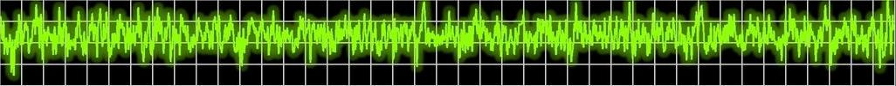
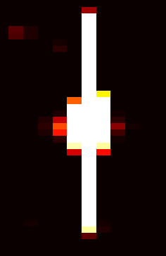
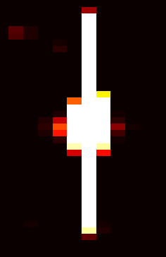

Üdvözöljük a SPEX csoport honlapján!
A SPEX a Konkoly Obszervatórimban működő kutatócsoport. Fő célja a csillagok belsejében zajló fizikai folyamatok megértése és távoli bolygórendszerek tanulmányozása a NASA Kepler-űrtávcső nagy pontosságú fotometriai adatainak felhasználásával. A csoport 2007-ben alakult, két évvel a Kepler űrtávcső fellövése előtt.

A Kepler a NASA Discovery-osztályú missziója, mely elsősorban Föld-szerű planétákat keres a Naphoz hasonló csillagok körüli lakhatósági zónákban. Ehhez mintegy 150000 csillag fényességét méri folyamatosan Galaxisunk síkjához közel, a Hattyú és a Lant csillagképek határán. A keresés tranzitmódszerrel történik, amikoris a csillagok fényességének apró, periodikus csökkenései jelzik a bolygó csillag előtti átvonulásait. 2015 februárjáig a Kepler több mint ezer Naprendszeren kívüli bolygót talált, köztük az első többszörös fedési rendszert, melyben a Kepler-9b és -9c jelű - két Szaturnusz méretű bolygó - is ugyanahhoz a naprendszerhez tartozik. A Kepler-10b az eddig felfedezett legkisebb kőzetbolygó, a Kepler-11, az első hat fedési bolygót tartalmazó rendszer, vagy az első kettőscsillagok körül keringő bolygók. Ezen kívül a Kepler 4200 fedési bolygó-jelöltet talált, köztük több jelölt Föld-méretű, vagy kisebb, és pár a lakhatósági zónában kering.


A Kepler a jelenlegi legpontosabb eszköz, amivel a csillagok fényességváltozása mérhető, a pontosság az évekig tartó folyamatos megfigyeléssel párosítva egyedülálló lehetőséget teremt a foltos, flereket mutató, fedési és pulzáló vagy oszcilláló csillagok fényváltozásainak tanulmányozására. A csillagszeizmológia a csillagok piciny fényváltozásokat okozó rezgéseit használja arra, hogy feltérképezze azok belső szerkezetét, pontosan úgy, ahogy a szeizmológusok Földünk belsejét tárják fel a földrengéshullámok segítségével. Az asztroszeizmológia a csillagok pontos tömegét, sugarát és korát is szolgáltatja. A fedési exobolygók jellemzőit csak csillagaik pontos paramétereinek birtokában tárhatjuk fel. Ezért a szeizmológia módszere a csillagok mellett a planéták és bolygórendszerek megismerésében is segít. A Kepler-adatok szinte minden típusú pulzáló csillag esetében új és váratlan jelenségek felfedezésével és évtizedes asztrofizikai rejtélyek megoldásával kecsegtetnek, hiszen ez a pontosság és a folyamatos mérés lehetősége a Föld felszínéről elérhetetlen.
 

A Kepler látómezejébe eső pulzáló és oszcilláló csillagok vizsgálatának koordinálására jött létre a KASC, a Kepler Asztroszeizmológiai Tudományos Konzorcium. A szerveződésnek 400-nál is több tagja van a világ minden részéről. A 13 munkacsoport közül Szabó Róbertet a 7-es munkacsoport (cefeidák) és a 13-as (RR Lyrae) munkacsoport elméleti modellezés alcsoportjának vezetőjévé nevezték ki, míg Kiss László a 12-es munkacsoportban a mira és félszabályos változócsillagok vizsgálatait vezeti. A magyar Kepler-csoport részt vett a célpontkiválasztásban, ami megelőzte a Kepler felbocsátását. Ez a munka elengedhetetlen, mert a Keplert kizárólag előre kiválogatott célpontok megfigyelésére tervezték. Munkacsoport-vezetőként továbbra is hozzájárulunk a célpontlista frissítéséhez, ezáltal aktívan befolyásoljuk az űrtávcső működését, és elősegítjük a misszió céljainak elérését. Végül álljon itt a teljesség igénye nélkül kutatócsoportunk Keplerrel kapcsolatos tevékenységeinek felsorolása:
- Előkészítő munka, célpontválogatás
- Földi támogató észlelések
- Adatfeldolgozás, adatanalízis
- Numerikus modellezés
- Az eredmények értelmezése és publikálása
- Sikeres Guest Observer és DDT pályázatok írása
- KASC szervezés, adminisztráció és döntéshozatal
- Ismeretterjesztés
Hírek
A NASA Senior Review határozata a K2 külde-tés meghoszszabbítá-sáról döntött! Több infó itt és itt.
Megjelent a csoportunk által Visegrádon rendezett RR Lyrae konferencia anyaga, amely itt érhető el.
Seismology of the Sun and the Distant Stars 2016 - TASC2 & KASC9 Workshop, 2016. július 11-15, Angra do Heroísmo, Terceira-Açores, Portugália
Csoportunk a Kepler űrtávcsövet használva felfedezte, hogy a 2007 OR10 a legnagyobb, név nélküli törpebolygó a Naprendszerben. Részletek a NASA honlapján.